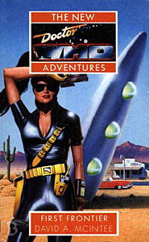

|
First Frontier
|
BASIC PLOT DOCTOR COMPANIONS MATERIALISATION CIRCUIT Pg 257 The Doctor's TARDIS arrives at Corman AFB. Pg 283 On a plane carrying a nuclear warhead. PREPARATORY READING CONTINUITY REFERENCES Pg 13 "Almost immediately, the short man in the passenger seat got out and looked around approvingly from under the sagging brim of a limp fedora that matched the cream-coloured field of his rumpled linen suit, unbroken but for a jade Aztec brooch on his lapel. He had had to give special instructions to Groenewegen's Millinery on Neo-Sydney to get the white hat made, but it was worth it in climates like this." The brooch is from The Aztecs, whilst the 'special instructions' are a result of fan Sarah Groenewegen pointing out to McIntee that they don't make fedoras in white. The Millinery on Neo-Sydney is mentioned again in Set Piece and finally seen in So Vile a Sin. "The old home universe again." A result of them being in a VR environment for the bulk of the previous novel, Strange England. Pg 15 "'You don't intend to just walk into a Cold War base, surely?' Ace called out to him. 'They'd probably shoot us, just in case.'" An almost precise reprise of a moment in The Curse of Fenric. The first of many references to Ace's time in Spacefleet, which ended in Deceit. Pg 16 "'Exactly, and I never got us killed, not even once.' 'The lunar surface?' Ace put in with considerable patience." Timewyrm: Revelation. Pg 23 Major Kreer, who will turn out to be the Master, is accompanied by a Captain Stoker. Long-term fans will know that James Stoker, an anagram of 'Master's Joke' was used as the pseudonym for the actor playing Sir Gilles Estram in The King's Demons in the Radio Times listing for said story, to disguise Ainley's appearance. This was rather ruined by having 'Estram' as the most obvious anagram for 'Master' since Tremas. Pg 41 "A rather odd bunch of Sidhe who inhabit the upper dimensions of Earth's timeline." That's a very strange phrase. Originally McIntee intended to use the Sidhe as the villains in this piece, but that didn't happen because a different type had already appeared in Cat's Cradle: Witch Mark. He eventually used them in Autumn Mist. Pg 45 "She personally had no objection to being protected by good defences, be it a deflector shield, woven Kevlar fibres or bonded polycarbide armour." The latter is what the Daleks are encased in, according to Remembrance of the Daleks. "Certainly, there had been no nuclear exchange before she had left Earth in 1986." As reported in Dragonfire, and this confirms the date. Pg 46 "I never did like deserts much, not since I was in the Gobi, anyway." Marco Polo. "By the pricking of my thumbs..." A reference to a comment in The Robots of Death. Pg 47 "'On Segonax, for example.' Reminded of the nightmarish events at the Psychic Circus on Segonax, Ace grimaced." The Greatest Show in the Galaxy. Pg 54 "I once had one [a dream] where all my old foes chased me round a soap opera." Dimensions in Time. Pg 67 "He seemed to have money for every occasion, from wooden groats to the occasional twenty-narg note." Reminiscent of the scene in Battlefield, whilst directly referencing The Two Doctors. Pgs 67-68 "Brandishing his alternative self's sonic screwdriver, recovered from a world in which Homo Reptilicus had destroyed humanity." Blood Heat, and I don't think we've ever heard the Silurians referred to in that way before or since. Pg 72 "My assistant and I helped him out last year in California, when a town was almost taken over by... illegal aliens." An unrecorded adventure. Pg 73 "'Scientific adviser?' the Doctor asked, eyes wide. 'He's not a tall, white-haired...'" The Doctor is busily panicking about meeting his former self. Pg 74 "The Doctor wasn't going to stop her riding one of these things like he had back in Perivale." The unlikely motorcycle collision in Survival. "She had occasionally borrowed Midge's bike when she was just a teenager, more to spite her mother than anything else." Midge appeared and died in Survival. Ace's mother is a huge part of the plot of The Curse of Fenric, and she appears in Love and War. Pg 78 "Spacefleet weren't that concerned about the Irregular Auxies." Ace's division, as we saw in Deceit. "She had already lost both her parents to raw hostility." We learned about the deaths of Benny's parents in Love and War. The rumours of her father's death, however, turn out to be greatly exaggerated, as we will discover in Return of the Living Dad. Pg 81 "Let's just say this isn't the first time I've hijacked something." Probably a reference to Master hijacking the nuclear missile in The Mind of Evil. Pg 94 "S'Arl has been in Draconian space since the last Dalek war." Frontier in Space. "They were destroyed by the Veltrochni." Who appear in The Dark Path and Mission: Impractical and are mentioned in White Darkness and The Janus Conjunction. Reference to the Matrix on Gallifrey (as if you didn't know). The Deadly Assassin and so on. Pg 95 "'You've met them before?' Benny asked. 'Twelve hundred years ago, at Mimosa II.'" Another unrecorded adventure. Pg 107 "The essence of matter is structure and the essence of structure is mathematics." A quote from Logopolis. "Kreer ignored him at first, almost unwillingly recalling the previous occasion when he had served as a scientific adviser of sorts." This would appear to be a reference to the as-then unpublished and unwritten The Face of the Enemy. Pg 117 "Chases are a waste of energy." See episode two of Planet of the Spiders. Pg 125 "The Doctor applied a half-remembered Venusian Aikido strike to the last. 'I'd almost forgotten how difficult that is with only two arms,' he muttered.'" Reference to Venusian Aikido from the Pertwee days. Pg 126 "For Venusian Aikido? Five [arms]; and five legs as well." First Frontier was released almost at the same time as Venusian Lullaby, which demonstrated that, yes, they had five arms and five legs. Pg 128 "Oolion is unique to Collactin. It used to exist on Bandraginus Five as well, but that was destroyed by Zanak about eighty years ago." The Pirate Planet. Pg 129 "I was on Zanak in 1978" The Pirate Planet. Pg 131 Another reference to Spacefleet. Pg 134 "Backed by the rumbling vibration of the surging engines, Ace howled a Daak-style war-cry as she hauled back on the yoke." Now why on Earth would she do that? Deceit. Pg 141 "His lined face was surmounted by an unruly mass of tousled white hair, which was writhing in the wind. His red velvet jacked was almost totally obscured by the flowing black cape of some kind. Scrutinizing a dimly visible metal cylinder which was balanced on a wire attached to the door, he wore a look of intense concentration. Taking a deep breath, he whipped open the door and hurled himself through." The Master has generously lent the Tzun some DVDs of Pertwee adventures. This one is Terror of the Autons. Pg 148 "The humans do not have the technology to attack this vessel, and the nearest spacefaring power other than ourselves is that of Centauri - a world of total pacifists." As in Alpha Centauri, from The Curse of Peladon, The Monster of Peladon and Legacy. "The closest potential military opponent to us is the Rutan Host, massing near Achernar in Eridani. They, however, are fully occupied by their blood-feud with the Sontarans." Horror of Fang Rock, The Time Warrior et al. Pg 154 "The Venusians have been extinct for millions of years." Venusian Lullaby. A reference to Cybermen, and their dislike of gold. Pg 166 "'Shadow?' he called softly. A low purr answered him from the top of a narrow cupboard overlooking the door." The Master's pet cat from Survival, whom we had all assumed was called Shomi. Pgs 187-188 "The centerpiece of the device consisted of a battered square aerial plugged into a bizarre art deco ghetto blaster." Silver Nemesis. Pg 188 "'Madness is relative,' the Doctor snapped. 'Mine certainly are, anyway.'" Lungbarrow. Pgs 198-199 "It looked to Benny like either a weapon or a sex toy, and she didn't think even he would consider this a proper time or place." Great line, and a statement about the Master's Tissue Compression Eliminator (from Terror of the Autons originally, and lots since then) that we've all been thinking. Pg 199 "A medium-sized black cat watched her impassively through luminescent eyes." The kitling from Survival. "Strangest of all was some sort of Ionic-style fluted sandstone column." The Master's TARDIS from Logopolis, Castrovalva and Time-Flight. "Even with all this primitive equipment, the Staatenheim remote-control principle works perfectly." The Two Doctors. Pg 200 "His feral smile exposed pointed teeth amidst the neatly-trimmed beard." Survival again. Pg 202 "Benny drew back from his look, for now his hooded eyes were glowing internally with the same lucent gold as the cat's." Survival yet again. Pg 204 "The Doctor said you didn't have a TARDIS last time you met." Survival. Again. Pg 205 "Really? Are you familiar with the Nestene Consciousness?" The Master is referring to Terror of the Autons, but there's also Spearhead from Space and Rose to consider. Pg 206 A reference to Trakenite DNA is followed by the Master saying "No more will I suffer the indignity of carrying the blood of that pacifist degenerate." He means Tremas, from The Keeper of Traken. Pg 211 "I can almost smell him." As the narrative goes on to explain, this is a reference to Survival. Again. There's also a reference, on the same page, to Midge and the Perivale Youth Club, from the same source. Pg 212 "This is where a Dalek anti-grav disc would come in handy." The early 1960s comics. Pg 216 "When we confront the Master, you may want to just shoot him, since I doubt you could hold him. The British government couldn't, at any rate." The Sea Devils. Pg 219 "She fought down the primitive urges with visible effort, aided only by the memory of the lifeless and accusing faces of Paul Richmann and all the others whose lives she had helped to end, for good or for ill." White Darkness. Pg 222 Another reference to the Cheetah Planet from Survival. Pg 227 "'Here come the cavalry to shut the stable door.' Benny grimaced at Ace's mix of sayings. 'You've been hanging around the Doctor far too long.'" Time and the Rani, mostly, although he has done this occasionally since then. Pg 229 "Perhaps if I reversed the polarity of the neutron flow." The Third Doctor's alleged catch-phrase, which he only actually used in The Sea Devils. Pg 231 "He'd hardly had such good subjects since the desperate residents of Stangmoor Prison." The Mind of Evil. Pg 235 "But analyzing it gave you the basic structure of our symbiotic nuclei." The Two Doctors. Pg 237 Reference to the Daleks causing the death of Benny's mother (Love and War). Pg 238 "She knew that, unless she found such a stronghold in which to lick her wounds, there would come a day when the scrapes would cease to heal properly." This is preempting Ace's leaving of the TARDIS in Set Piece. Pg 242 "Think of the Sontarans." That'll be a reference to the Sontarans, then. Pg 246 "Scan the Elephant Butte reservoir for latent artron energy." From The Deadly Assassin and lots more besides. Pg 247 "His mind's so twisted that he can't even walk in a straight line without getting dizzy." This is a direct quote from The Mark of the Rani... Pg 248 "Haven't you any out-of-date magazines for me to read?" ... whereas this is a direct quote from The Ultimate Foe. Far too much Pip and Jane Baker to my mind. Pg 251 "He's always been irritatingly resourceful. Ever since the Prydonian Academy, in fact." The Deadly Assassin, and was there really a need for the word 'Prydonian' at this point? Pg 252 Reference to Perivale in 1989 (Survival) and Traken (The Keeper of Traken). Pg 261 "Perivale's milkman, lying in torn shreds in the dust of an alien planet. Karra, transformed into an animal, then impaled on a dagger carved from the tooth of some great beast. There was Midge - always Midge - perverted by subservience to the Master." Survival. Of most interest here is the fact that Karra was played by Lisa Bowerman, who would go on to play Bernice Summerfield in the audios, but no one knew that then. Pg 263 A reference to Ice Lords, from The Ice Warriors et al. Pg 264 Yet another reference to the Cheetah Planet. Pg 266 "'Go ahead,' the Master mocked softly. 'Look me in the eye. End my life.'" The Happiness Patrol. Pg 268 "'Predictable as ever,' the Master crowed." The Deadly Assassin. Pg 284 "We'll just materialize around the plane, jump forward a few minutes and drop it off in space when the Earth has moved on in its orbit." A little like the resolution of Blood Heat. "I had enough experience of first class on Concorde." Time-Flight. Pg 286 "The Tzun in 1957, Daleks in 1963, Cybermen in 1988, Hoothi on Heaven." This novel, Remembrance of the Daleks, Silver Nemesis, Love and War. OLD FRIENDS AND OLD ENEMIES NEW FRIENDS AND NEW ENEMIES Lt. John C. Finney, Lt. E Wood, Captain Bruce Stephens, Major Marion Davison, Lt. Carl Vincente, Major General Hugh Nyby, Sergeant Montoya. Joseph Wiesniewski, Jack Siegel and his family, Sara who works in the diner, Ken Andrews.
CONTINUITY COCK-UPS PLUGGING THE HOLES [Fan-wank theorizing of how to fix continuity cock-ups] FEATURED ALIEN RACES FEATURED LOCATIONS New Mexico, October 4th and thereafter, 1957. Including Alamagordo, out in the middle of the desert, the White Sands Proving Grounds at Hollomon Air Force Base, near the Sacramento Mountains between High Rolls and Cloudcroft. In orbit above Earth, on the Tzun Stormblade R'Shal in the same time period. Washington DC, same time period, including the Naval Research Laboratories. IN SUMMARY - Anthony Wilson |
|
 |